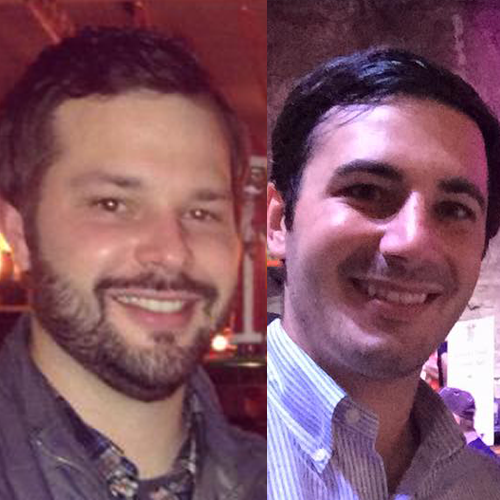

-
EPISODE
030
12.08.15
37:11
Robert Mohr & Tom Johnson of Aroma Academy (@AromaAcademyUS) join the podcast to talk about the science behind using olfactory senses to know more about your bourbon and the key aromas. Read Show Notes
- How do you store your extensive bourbon collection? Is it like storing wine?
- Give us a quick intro about how you are and how you got into bourbon
- The tagline is “a sensory training for DRINKS PROFESSIONALS” so talk about what is Aroma Academy
- Are the smells common between everyone or does everyone smell something different?
- What are some of the key aromas we get from bourbon?
- Has there ever been a bourbon, scotch or wine that you’ve nosed and you said, “I’m not even going to drink that”
- Talk about your blog post on creating a Pappy Van Winkle nosing sample
- Have you found two particular brands of bourbon that are two polar opposites of one another?
- If someone purchases a kit, is there a 24-hour turnaround time or how long does it take to better develop your olfactory senses?
- Do aromas change based on density levels depending on the type of glass its in?
- Talk about letting the alcohol dissipate after pouring it in a glass before nosing and tasting
- Special 20% discount for Bourbon Pursuit listeners on the 24 Aroma Kit - When checking out, just use the coupon code “Pursuit”.

-
EPISODE
029
12.04.15
32:35

John Kowalczyk reveals how he started a Bourbon Christmas Gift Exchange that grew from just a handful of friends to an event that is sponsored by liquor stores and distilleries. Read Show Notes
- Overview of the past few bottles to come out and Ryan is becoming a dusty hunter after attending Whiskey Pig at Willett Distillery.
- What’s your bourbon story? How did you get into it?
- Tell us about your Bourbon Gift Exchange
- Are there rules to your gift exchange?
- Throw out some of the names of the brands you had your first year
- How did more people find out about it and spread?
- Is there a certain bottle that stands out among the crowd?
- How did you get sponsorships from local stores and even distilleries?
- What are the plans for this year? Are you trying to step it up?
- After the exchange is over, do people just immediately open their bottle and start sharing?

-
EPISODE
028
11.24.15
32:04

Matt Jamie, Founder and Owner of Bourbon Barrel Foods, talks about how he started a company with Bluegrass Soy Sauce into a brand that does everything to promote "Eat Your Bourbon". Read Show Notes
- We’ve taken a hiatus and we apologize. Sometimes life just gets in the way… and bourbon hunting. lots and lots of bourbon hunting.
- What's your bourbon story? I know you are a Louisville native, has bourbon always been in your blood like ours?
- Tell us the story of Bourbon Barrel Foods and how it got created.
- Talk about some of the products and what makes them special
- I notice that you also have a lot of products from Woodford Reserve. Can you talk about their products or the partnership you have with them?
- Talk a bit about Kentuckiaki and Bourbon Vanilla Extract
- I was also reading about a sponsorship you received in 2013 to help build a Kitchen Studio. Can you talk about that?
- Do you have any of your favorite recipes?
- If people in louisville and traveling for the bourbon trail want to find a retail store, where do they go?
- What entails the Eat Your Bourbon Class and the Chef Series?
- If you want to learn more, you can visit the online at bourbonbarrelfoods.com or follow them on twitter @bourbonbarrel

-
EPISODE
027
10.09.15
30:26

Dixon Dedman, Owner Operator of Beaumont Inn & Partner in Kentucky Owl, joins us to talk about his family history and how they revitalized a brand that died during prohibition. Read Show Notes
- Fantasy teams are now using high valued bourbons as entrance fees
- Lets talk about you. Who are you and what have you been doing up to this point?
- Lets talk about your bourbon. What got you into dealing with the brand?
- Why the tag name “The Wise Man’s Bourbon”?
- What made you go with a barrel proof bourbon?
- How many barrels went into the particular batches?
- So you take the barrels, and you dump them and put them into new charred barrels?
- Is there a big difference between Batch 1 and Batch 2? What about Batch 3?
- This is a KY only release. Why only KY?
- How does it feel to have this craze happening?
- Talk about the Old Owl Tavern on your property
- Where do you sit on the Bourbon Trail?
- For anyone still looking for a pour of KY Owl, can they get it at the tavern?
- Adam Johnson asks, What is the secret to the General Lee cake?
- How can people get in touch with you?

-
EPISODE
026
10.02.15
34:55

Mikael Mossberg, Co-Founder & CEO of Distiller, talks about his whiskey recommendation app and how his whiskey passion led him to be in the startup world. Read Show Notes
- Kick off the show talking about Parker's Heritage Collection #9, The Malt Whiskey Release
- What has your past been that led you up into Distiller?
- Tell us more about the app, what would you categorize it as?
- How did the idea spawn?
- We really like the "trending bottle", how did that idea come about?
- Walk us through the recommendation engine
- Where do you find your expert reviewers?
- The reviews are like Amazon reviews, short and to the point.
- What sort of glasses do you drink out of? I found a good tidbit of information from Marianne Barnes about density and nosing.
- How many people are on the platform?
- How do you get all these bottles and samples for reviews?
- How did you come up with the tagline "The Whiskey Companion"?
- Shout out to our new audio engineer David Isreal

-
EPISODE
025
09.23.15
32:06
Nino Marchetti (@WhiskeyWash), Founder at TheWhiskeyWash.com, joins us today to announce a new partnership between us. We talk about his news outlet, the authors, products, and most importantly, his bunker! Read Show Notes
- Starting the show off by drinking Kentucky Owl Batch #2. Add it to the collection if you have the money to spare
- Talk to us about the TheWhiskeyWash.com
- We’re proud to announce a partnership between our two brands
- Nino has an offsite, undisclosed location, for his bunker
- Talk about the authors on the site
- Talk about some of the most popular articles
- One of the most popular articles is about the $75,000 Whiskey
- In regards to reviewers, what walks of life do they come from so we trust them?
- There are lots of reviews on food pairings
- Your apartment is on fire, what’s the one bottle you grab?

-
EPISODE
024
09.18.15
29:52

Krim Comstock, the Bourbon Marketing Director at Buffalo Trace, talks about how he made his way to Kentucky and gives us insight into the brands and even the new 2015 Buffalo Trace Antique Collection (sorry about the horrible audio on this one). Read Show Notes
- Firenado/Bourbonado
- Tell us your bourbon story
- What led you to Buffalo Trace?
- What do you do in your current role?
- Give everyone a bit of insight on how you do forecasting for production?
- Since you are in charge of packaging lets talk a bit about some of the labels we see today. Can you talk a bit about some of them and perhaps some backstory. Maybe even give the listeners an understanding why Buffalo Trace is even called Buffalo Trace?
- Now i know Blantons has the collector series of caps. Am I right?
- You’ve also had a hand in developing some of the other brands like EH Taylor, Experimental, Stagg Jr and Single Oak. talk about each one of those a little bit and the roles you played
- The Antique collection was just announced. Talk to us about it a bit
- Follow Kris on twitter at @BUFFALOCOMSTOCK

-
EPISODE
023
09.10.15
23:25

Carol Perry, or just Perry, is a legend in his own right. Perry has worked at the Stitzel-Weller distillery in Shively for 45 years. He has held about every job you could possibly have and is currently working security and head greeter for the Bulleit Frontier Experience. Read Show Notes
- Give us an idea of what you have been doing here for the past 45 years
- Talk about what life is like working at the warehouse
- Why did they have windows open only during the day?
- What other kinds of experiences did you gather from working at warehouse?
- Drinking your own product on the job probably wasn’t uncommon back then
- How automated were the processes back then?
- What do you mean by dumping the glass?
- Did you ever have any interactions with the Van Winkle family?
- Wasn’t there a break room incident with Julian?
- What were you doing when the distillery closed its doors?
- Any security incidents in your time?
- You’ve seen the ups and downs, is this the craziest time you’ve ever seen?
- Is there a best memory that sticks out for you during this time?

-
EPISODE
022
09.02.15
30:11
Your hosts, Kenny and Ryan, take a look back on the past 21 episodes. We talk about the guests and what is still to come with the remaining part of the year. Read Show Notes
- Have we had some guests that have stood out more than others?
- Great history lesson with Brian Harra of Sipp'n Corn
- Learned a great deal about pot still vs column still with Brent Goodin of Boundary Oak
- Have you had any favorite bourbon releases this year?
- Lots of distilleries are having unique and rare releases for big money
- If you think you are going to visit Louisville for bourbon hunting, you've come to the wrong place
- Did you ever open your EH Taylor Cured Oak?
- Are people looking to get price for proof now?
- Take a look back on the Ophan Barrel releases with Ewan Morgan
- What other guests did you find interesting?
- We also get to visit some interesting places such as mansions to record our podcasts
- Jim Rutledge's retirement made us thankful he recorded a show
- An Easter Egg... you have to listen to find out!!

-
EPISODE
021
08.11.15
32:54
Brent Goodin, Master Distiller at Boundary Oak Distillery, discusses his new startup distillery and how his first bottle of bourbon off the line sold for $28,000. Read Show Notes
- What’s your bourbon story? Do you have an earliest moment with bourbon?
- Are you picking up the family lineage of getting back into the bourbon industry?
- What led you to becoming a Master Distiller? Any influencers along the way?
- How long have you been practicing your trade?
- Where does the name Boundary Oak come from?
- Where is your location in relation to the Kentucky Bourbon Trail?
- I don’t get to use this word very often, but What’s it mean to be the first distiller in Hardin County after a “centennial plus some”?
- There was an Insider Louisville article lately that talked about a record being broken for the most paid for a first bottle of bourbon. Talk about that
- Most consumers think 2 year old bourbon is under-aged. Are you doing something different to age your bourbon to make it more appealing?
- How big is your operation? and how many barrels can you age?
- Are you thinking you are going to have multiple brands or mix them all together to have a consistent flavor?
- What price point are you targeting?
- As with most distillery startups, you already have a product for sale, Kentucky Amber, talk about it a bit
- How can people get a hold of you and learn more about the distillery?

-
EPISODE
020
07.29.15
36:06

Brian Haara (@SippnCorn), Attorney and blogger at Sipp’n Corn, joins the podcast to talk about the history of the bourbon industry through the lens of lawsuits. Listen to find out how Colonel Taylor loved getting himself into trouble as well as the real story behind Ezra Brooks. Read Show Notes
- Do you have a favorite office bourbon?
- What’s your bourbon story?
- How did you get into bourbon?
- The one thing I love how blog is such an interesting angle into the past. You stumbled upon this, now are you going through archives in Lexis Nexis to search for keywords like “EH Taylor”.
- Do you think more people are looking to become educated consumers?
- You have an article on your blog on how to read the Four Roses single barrel label
- Talk about Copycat Whiskey with Jack Daniels and Ezra Brooks
- Who is the most notorious for being in legal trouble with bourbon?
- Talk a bit about Taylor and the bottle-in-bond act
- What about the lawsuits between George Stagg and Taylor? What did that mean about the brands and the distilleries?
- Is there more legal trouble about Taylor’s Signature?
- You’ve got another article called Kentucky Isn’t Big Enough for Two Colonel Taylors. Talk about that.
- Did you see a lot of cases based off copyright or brand infringements?
- Churchill Downs Distilling vs Churchill Downs Inc.
- Were there any cases involving Stitzel-Weller?
- Are there any recent laws or cases that are interesting?
- Give me your favorite bourbons you have reviewed recently

-
EPISODE
019
07.21.15
31:39

David Mandell, CEO of the Bardstown Bourbon Company, talks about the beginning of one of the newest and largest distilleries to ever hit Bardstown, KY. We talk about the present and future of this up and coming distillery. Read Show Notes
- David tell us about your background
- Tell us about the spirits you will be distilling
- Give us your bourbon story. What led you into the spirits business?
- Talk a little bit about the operation you are currently building
- What edge does this give you compared to Heaven Hill, Four Roses for outsourcing bourbon?
- What are you going to do with 37,000 square feet of space?
- We’re the first to break the news about Harrison-Smith House being a staple at the new distillery.
- What else can you fit inside this massive space?
- What’s the timeline to get the stills running?
- To be called a bourbon it needs to be aged for two years. So what’s your two year plan to fill the gap?
- What are the long term plans with that facility?
- What was the solidifying fact by choosing Bardstown as the home for this new distillery?
- What are the biggest hurdles you see as the biggest blockers for trying to get into the spirits industry?
- Tell us about Steve Nally and what he brings to possible micro-distillers wanting to expand their product lines
- Where are you exactly in Bardstown?
- Like Bardstown Bourbon on Facebook, Follow @btownbourbon on twitter

-
EPISODE
018
06.26.15
29:04

Marianne Barnes, Master Distiller at The Distillery Formally Known as Old Taylor, discusses her new role, what everyone can expect coming from this revitalization, and insights into what it takes to be a master distiller. Read Show Notes
- Tell us a little bit about your past
- How does chemical engineering play into this role?
- Talk to us about why we have you on the show
- Are you going to keep the name Old Taylor name or will it be renamed?
- What’s being invested into restoring the distillery?
- Where is the distillery in relation to the bourbon trail?
- Where do you see this business in the next 5 years?
- How do you measure success?
- What can you do differently versus Brown-Forman?
- What does it mean to be a woman in this male dominated field?
- Talk to us a little bit about what made you so successful and why you were chosen for this role
- What is going to set your bourbon apart from everything else on the market?
- When is the distillery going to be up and running?
- Follow Marianne Barnes on Facebook

-
EPISODE
017
06.11.15
34:52

Ewan Morgan, National Director for the Diageo Masters of Whiskey, joins us from DC to talk about his past with whiskey, scotch, and bourbon. We dive deeper into the Orphan Barrel releases as well as the latest, Blade and Bow. Read Show Notes
- Tell us about your love story with bourbon. How did you get into the industry?
- Give us an idea about the differences you see in scotch vs whiskey vs bourbon
- Talk about your role at Diageo as a Master of Whiskey
- How would you even begin in that career path?
- Talk about how Diageo started getting into pure bourbon?
- Give us a little bit of history and the inspiration behind the Orphan Barrels
- How did Diageo come up with the bottle designs?
- Can you talk a little bit about the Diageo Orphan Barrel releases? Old Blowhard, Barterhouse, Lost Prophet, Rhetoric, and Forged Oak. What makes each unique?
- Some Orphan Barrel series such as Barterhouse are seeing new batches show up while some others such as Lost Prophet are pretty much done. Can you give an indication of which releases we can expect to see more of? And which ones are done?
- Diageo recently released Blade and Bow. Talk to us a bit about both releases
- What is solera aging?
- Talk about the marketing of the key and the name “Blade and Bow”
- What does it mean to call the old Stitzel-Weller distillery "home"?
- How much Stitzel-Weller juice do you have on hand?

-
EPISODE
016
06.03.15
33:49

Marianne Zickuhr, Executive Director of Preservation Louisville, talks about the history of Whiskey Row and her involvement with preserving this iconic landmark in downtown Louisville, KY. Read Show Notes
- What was your first memory or first bottle of bourbon?
- What’s your role at Preservation Louisville?
- Did you study history in college or have you been a history buff?
- What is Whiskey Row in Louisville, KY?
- How did you get involved with it?
- Can you recall any of the names that might have inhabited Whiskey Row?
- Can you explain more about the building because the facade is there but what about the rest of the building?
- Why did Whiskey Row die off?
- Do you know the origin of the tiles on the block showing names of the old distilleries?
- Is everything done what can be done to preserve it?
- There is a bourbon called Whiskey Row but it’s actually made in Crestwood, KY and you have a story about that.
- Follow @PreservationLou on twitter and @PreservationLou on Instagram.